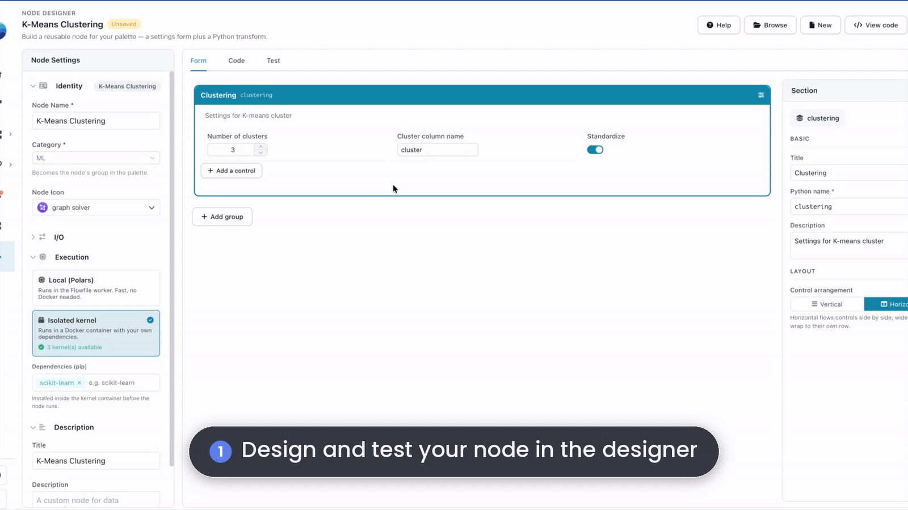

Node Designer
The Node Designer lets you build reusable custom nodes visually — no Python file to write by hand. When the palette doesn't have the operation you need, you build it here: drag controls to lay out the settings form, write the transformation as one small process method, test it against sample data, and save. Your node then appears in the palette alongside the built-in ones, with its own settings form — usable by anyone on your team, whether or not they code.
The node's .py file is the single source of truth. The designer writes it, and — because a well-formed node file round-trips — it can reopen that file and load it straight back into the visual editor. Hand-written files that stay within the visual subset reopen visually too; anything more exotic opens in code-only mode.
Not in Flowfile Lite
The Node Designer requires the full desktop/server build and is not available in the browser-only Flowfile Lite edition. Use the Polars Code node for custom logic there.

Quick Start
Prefer to follow along?
The Build your first custom node tutorial walks the whole thing click-by-click in a few minutes. For a node that needs a third-party library, see K-Means on a Kernel. This page is the reference behind them.
- Open Node Designer from Settings (the gear icon in the left sidebar) under Extensions.
- In the left Node Settings panel, set the node's name and category.
- On the Form tab, add a group and drop controls into it with Add a control.
- On the Code tab, write your
processlogic (body only — the signature is fixed). - On the Test tab, paste a small sample and run the node to confirm it works.
- Click Save. The node loads immediately — no restart.
No restart needed
Flowfile hot-reloads the custom-nodes directory. A saved node is available in the palette right away. If a file was added outside the designer while Flowfile was open, click Rescan (in the Node Designer's Browse dialog, or on the Custom Nodes page under Settings → Extensions) to pick it up.
Layout
The designer has two regions:
- Node Settings (left) — the node's identity, I/O, execution environment, and description, grouped into collapsible sections.
- Workspace (center/right) — three tabs: Form, Code, and Test.
The toolbar at the top has Browse (open an existing node), New (start blank), View code (see the full generated file), and Save. A dot next to the node name marks unsaved changes.
Node Settings panel
The left panel holds everything about the node except its form and logic. It is organized into five collapsible groups.
Identity
| Field | Description |
|---|---|
| Node Name | The node's name and internal identifier. |
| Category | The palette group the node lands in — a real combobox (see Category). |
| Node Icon | The icon shown on the canvas and in the palette (see Icons). |
I/O
- Number of Inputs — how many input ports the node has (0–10). Inputs arrive positionally in
process. - Number of Outputs — how many output ports (1–10). When there is more than one output, an Output Names editor appears; each name becomes a separate output handle. (For the isolated-kernel environment, output names are always editable.)
Execution
The execution environment picker — Local or Isolated kernel.
Description
- Title — the display name shown on the node.
- Description — the intro text shown in the node's settings drawer and the palette tooltip. Markdown is supported.
Publishing
Optional metadata used when you share the node through the community registry:
- Author — your name or GitHub handle.
- Version — a semver string (for example
1.0.0). - Tags — search keywords for the community browser.
These fields are absent by default and don't affect how the node runs — they only matter when you publish it. Publish saves any pending changes automatically before it opens, so these edits are the ones it uses. See Community Nodes for the full publish-and-install walkthrough.
Category (real palette groups)
Category is a combobox: pick a standard group (Custom, Input, Transform, Combine, Aggregate, ML, Output) or type a new name to create your own group. Existing custom categories from your other nodes appear under Your categories.
The category is a real palette group. A node with category Text Processing appears under a Text Processing group in the palette; the group is created from the name. The default, Custom, keeps the historical User Defined Operations group. Naming a built-in group exactly places the node in that group.
Form tab
The Form tab is the settings form your node's users will see — built WYSIWYG. What you assemble here is exactly what renders in the node's settings drawer.
Groups
A group is a titled, collapsible section of the form (a Section in the SDK). Add groups from the group list at the top of the tab. Each group has:
- A display title (shown to users), inline-editable.
- A Python name (used in your
processcode, e.g.main_section), editable next to the title and sanitized to a valid identifier.
Click a group to select it; the controls you add land in the selected group.
Adding controls
Inside a group, click Add a control to open a popover of the available control types:
| Control | Use case | Value type |
|---|---|---|
| Text Input | Names, patterns, custom strings | str |
| Numeric Input | Thresholds, counts, percentages | float |
| Toggle Switch | Enable/disable a feature | bool |
| Single Select | Choose one option from a list | str |
| Multi Select | Choose several options | list[str] |
| Column Selector | Pick column(s) from the input data | str / list[str] |
| Column Action | A column paired with an operation choice | dict |
| Slider | A value within a range | float |
| Secret Selector | API keys, passwords, credentials | SecretStr |
The keyword name you give a control is the field name you read in process.
Secrets are your responsibility
Flowfile does not scan your process code to verify a secret is handled safely. Don't log secrets, expose them in error messages, or write them to output. Secrets are also not available in the isolated-kernel environment — reading one there fails at run time.
The Control Inspector
Selecting a control opens the Control Inspector on the right. It edits that control's properties — the field name, label, and type-specific options (min/max for a numeric input, the option list for a select, allowed data types for a column selector, and so on).
The inspector also has an Insert Variable action that copies the accessor path (self.settings_schema.<group>.<field>.value) so you can paste it straight into your process code.
Preview values double as test settings
The values you enter in the form preview are functional: they are the settings used when you run the Test tab, and "Save test setup with node" persists them as the node's example_settings.
Code tab
The Code tab is where you write the process method.
- A read-only signature header shows the fixed signature:
def process(self, *inputs: pl.LazyFrame) -> pl.LazyFrame:. You edit the body only — the designer composes the header and body back into the full method when it saves. - The editor has Polars-aware autocompletion.
- The Form fields panel on the left lists every control you added with its accessor path. Click a field to insert its accessor into the editor.
The process contract
- Inputs are
pl.LazyFrame, one per input port, passed positionally:inputs[0],inputs[1], … - Return a
pl.LazyFrameorpl.DataFrame(the framework normalizes either), or adictkeyed by output name for a multi-output node. - Read a control's value with
self.settings_schema.<group>.<field>.value.
Because inputs are lazy, prefer lazy Polars operations and return the frame unmaterialized. If a step genuinely needs eager data (a per-row Python callback, a shape-dependent branch), call .collect() inside process — it materializes in the isolated worker process, not in Flowfile's core.
def process(self, *inputs: pl.LazyFrame) -> pl.LazyFrame:
lf = inputs[0]
prefix = self.settings_schema.main_section.prefix_text.value
cols = self.settings_schema.main_section.columns_to_change.value
return lf.rename({c: f"{prefix}_{c}" for c in cols})
View code
The toolbar's View code button (and the Browse dialog's Code action) shows the full generated .py file — the class, settings schema, and process method the designer will write. The frontend never generates this Python itself; the backend renders it from your design, which is what guarantees the file round-trips.
Test tab
The Test tab runs the node against sample data without adding it to a flow — the same execution path a real run uses.
- Provide a sample input per input port. Edit the grid directly or paste CSV. For a multi-input node, switch between input ports with the tabs.
- Click Run test.
- The results show a per-output preview grid, the output schema, row count, run duration, and which environment ran it. Logs and any error (with a collapsible traceback) appear alongside.
The settings used are your Form-tab preview values. For an isolated-kernel node, the Test tab also has a Kernel selector: the dry run executes on that kernel. The selector ranks your kernels against the node's live dependencies (same badges as the node's settings drawer), can add missing packages to a near-miss kernel, and offers Create kernel for this node when nothing matches.
Save the test setup with the node
Tick Save test setup with node to persist the samples and settings into the file as example_inputs and example_settings. They travel with the node and reload the next time you open it, so the dry run is reproducible. Samples are capped (a small grid, not a dataset) and stored inside the .py file.
Execution environment
Every node declares where its process runs. The Execution group offers two cards:
- Local (Polars) — the default.
processruns in aflowfile_workersubprocess: a killable, isolated child that owns the dataset memory. Fast, no Docker. The worker does not pip-install anything, so a local node may use only packages already available to Flowfile. - Isolated kernel —
processruns inside a Docker kernel. Use it when the node needs third-party libraries or stronger isolation. A Dependencies (pip) tag editor on this card records the packages the node needs — they show on the node's kernel badge and tell users which kernel to pick. Kernel nodes can declare multiple named outputs. Secrets are not available here.
Dependencies are a requirement, not an install step
Flowfile does not pip-install a node's dependencies at run time. The kernel you run the node on must already provide them — through its image flavour (the standard ML image ships scikit-learn, XGBoost, LightGBM, and statsmodels) or through packages added to the kernel itself in the Kernel Manager. Flowfile checks the requirement for you: the node's kernel picker marks matching kernels, can add the missing packages to an existing kernel, or pre-fills a new kernel from the list — and running a scikit-learn node on a Base kernel fails fast with a clear "missing packages" error rather than a ModuleNotFoundError.
The picker shows live Docker status. When Docker is unavailable, the Isolated-kernel card explains why and offers Open Python Kernels and Retry — never a silent, dead dropdown. Create and start kernels under Settings → Execution → Python Kernels (see Kernel Execution) first.
Local execution needs nothing beyond Flowfile itself; the isolated-kernel environment needs Docker. The designer itself is the same either way — only where process runs changes.
Legacy nodes still load
Older nodes that used a requires_kernel flag still load — it maps to the isolated-kernel environment automatically.
How kernel execution works
For an isolated-kernel node, Flowfile builds a self-contained script from your node file: it defines your node class, bakes your settings values in as JSON, reads the inputs through flowfile_ctx.read_inputs(), calls your real process method, and publishes each declared output with flowfile_ctx.publish_output(). Your process code is unchanged, and the self.settings_schema.<group>.<field>.value access pattern works identically.
def process(self, *inputs: pl.LazyFrame) -> pl.LazyFrame:
from sklearn.ensemble import RandomForestClassifier
df = inputs[0].collect() # collect once for the eager sklearn API
target = self.settings_schema.main_section.target_column.value
X = df.drop(target).to_numpy()
y = df[target].to_numpy()
model = RandomForestClassifier(n_estimators=100).fit(X, y)
flowfile_ctx.log_info(f"Trained with accuracy {model.score(X, y):.3f}")
return df.with_columns(pl.Series("prediction", model.predict(X))).lazy()
For the full flowfile_ctx API (artifacts, display, logging, catalog access) available inside kernels, see The flowfile_ctx API.
Kernel selector in a flow
When you drop a kernel-enabled node onto the canvas, its settings drawer shows a Kernel picker to choose which kernel instance runs it. The picker marks which kernels satisfy the node's required packages, and node lists (the palette and the Custom Nodes page under Settings → Extensions) carry a readiness badge so you can see before placing a node whether a suitable kernel already exists. The same applies in the designer's Test tab, which has its own Kernel selector.
Icons
Node Icon in the Identity group lets you pick from the standard icon set or upload your own. The icon appears on the canvas and in the palette. Kernel-environment nodes carry a small corner badge on the canvas.
Markdown in descriptions
The node Description (intro) renders as Markdown in the settings drawer and the palette hover tooltip, so you can use bold, links, and lists. Canvas labels stay plain single-line text.
Browse, edit, duplicate
Browse opens the custom-node library. Each node card offers:
- Edit — load the node into the designer. If the file is within the visual subset, it opens in the Form and Code tabs; otherwise it opens in code-only mode.
- Duplicate — start a new node from a copy.
- Code — view the file's source read-only.
- Delete — remove the node (with a confirmation).
- Rescan — re-read the directory to pick up files added outside the designer.
A file that failed to load (a syntax or import error) stays listed with a warning marker rather than vanishing, so you can open and fix it.
The first time you save a hand-written node from the designer, its formatting is canonicalized; the designer shows a diff preview before writing.
Code-only mode
A file that uses constructs outside the visual subset — builder objects, dynamic construction, non-literal component arguments — still loads, but in code-only mode: a single full-file editor with a banner listing the parser issues that kept it out of the visual editor. The Test tab still works. Click Re-check after editing to re-parse; if the file now fits the subset, the designer switches to the visual Form view.
Mounting other directories
The default custom-nodes directory is ~/.flowfile/user_defined_nodes/, but you can register additional folders — for example a version-controlled repo of shared nodes. Register a directory under Settings → Extensions → Custom Nodes (or via POST /custom-node-mounts); registrations persist in a mounts.json next to the default directory.
Mounted directories are read-only sources: the designer edits and saves them, but a fresh save always writes to the default directory, never into a mount. Nodes from mounts appear in the palette and on the Custom Nodes page like any other.
The Custom Nodes page
Open Settings → Extensions → Custom Nodes to see every custom node across the default directory and all mounts, with its source, category, and load state. From there you can Rescan, manage mount folders, and open a node straight into the designer (a deep link with ?openFile=<file.py>).
Programmatic alternative
Everything the designer builds is also writable as a plain Python file — useful for version control or generating nodes programmatically. The two paths interoperate: a file written in the visual subset reopens visually. The SDK reference lives under For Developers: Custom Nodes in Code.
Related Documentation
- Custom Nodes in Code — the Python SDK reference (For Developers).
- Custom Node Tutorial — a guided end-to-end build (local execution).
- K-Means on a Kernel — build the same node visually and as code, running scikit-learn in a kernel.
- Kernel Execution — creating and running Docker kernels.
- The flowfile_ctx API — the API available inside kernel nodes.
- Building Flows — using nodes in workflows.